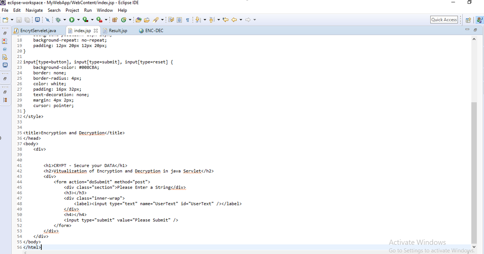
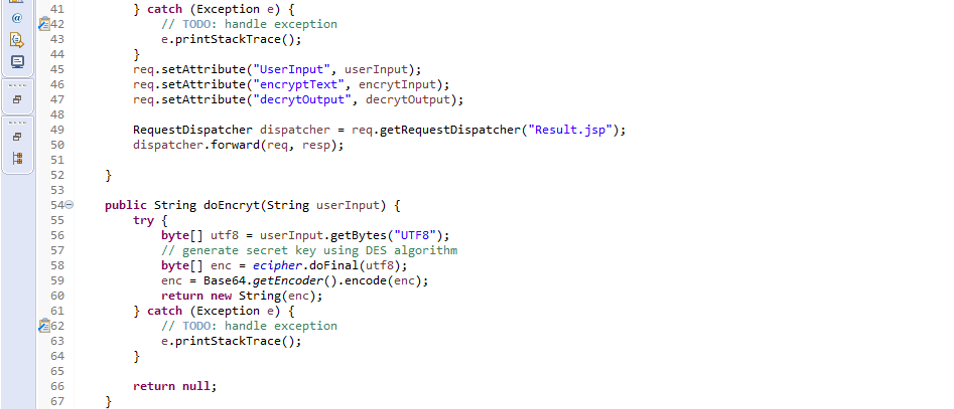
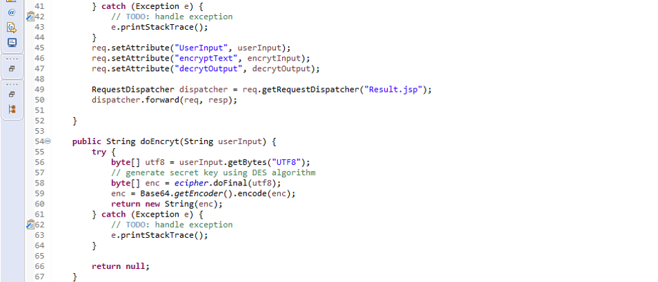

CRYPT - Encryption & Decryption

JAVA Servlet Application for Encryption and Decryption
Abstract:
Encryption and Decryption project is implemented in java platform. This application is used for providing security for data by converting normal data in to different format and transfer to end user where decryption algorithm is used to re-convert to correct format. Encryption and decryption algorithms are used in wireless communication networks, military, mailing, voice data…etc. Now a day’s every application uses different encryption methods. Gmail, yahoo mail use different encryption and decryption algorithms for providing security on mails.
In this project we study basic concepts of AES Algorithm, and its implementation methods. The Advanced Encryption Standard, or AES, is a symmetric block cipher chosen by the U.S. government to protect classified information and is implemented in software and hardware throughout the world to encrypt sensitive data.1. Introduction:
CRYPT is a service for securing text messages in an easy way. It could encrypt your message using strong encryption algorithms, so it will be more secure to send or store, than in plain text. Anyone who will get access to the encrypted message will be unable to read the original message without knowing your password.
Most of our communication channels can be easily accessed by third-parties, not only government and your internet provider, but even by your friends and family (if we're talking about social networks or your personal computer). Using CRYPT, you could encrypt sensitive information with secure AES cipher, so nobody will get access to it without knowing the original password.1.1 Java Cryptography Architecture:
The Java Cryptography Architecture (JCA) is the name for the internal design of the Java cryptography API.
JCA is structured around some central general purpose classes and interfaces. The real functionality behind these interfaces are provided by providers. Thus, you may use a Cipher class to encrypt and decrypt some data, but the concrete cipher implementation (encryption algorithm) depends on the concrete provider used. You can implement and plugin your own providers too, but you should be careful with that. Implementing encryption correctly without security holes is hard! Unless you know what you are doing, you are probably better off using the built-in Java provider, or use a well-established provider like Bouncy Castle.2. Background:
In this modern world, unauthorized persons are trying to mine data/view the data illegally.
This project will allow only authorized person to view the data who knows the secret key. So, unauthorized persons will be restricted to some extent. WE can learn and study how we can make our data more secure by learning basics of encryption and decryption. Encryption is the process of using mathematical algorithms to obscure the meaning of a piece of information so that only authorized parties can decipher it. It is used to protect our data (including texts, conversations ad voice), be it sitting on a computer or it being transmitted over the Internet. Encryption technologies are one of the essential elements of any secure computing environment. The security of encryption lies in the ability of an algorithm to generate ciphertext (encrypted text) that is not easily reverted back to its original plaintext. The use of keys adds another level of security to methods of protecting our information. A key is a piece of information that allows only those that hold it to encode and decode a message.There are two general categories of key based algorithms:
- Symmetric encryption algorithms: Symmetric algorithms use the same key for encryption and decryption. These algorithms, can either operate in block mode (which works on fixed-size blocks of data) or stream mode (which works on bits or bytes of data). They are commonly used for applications like data encryption, file encryption and encrypting transmitted data in communication networks (like TLS, emails, instant messages, etc.).
- Asymmetric (or public key) encryption algorithms: Unlike symmetric algorithms, which use the same key for both encryption and decryption operations, asymmetric algorithms use two separate keys for these two operations. These algorithms are used for computing digital signatures and key establishment protocols.
Apache Tomcat (also referred to as Tomcat Server) implements several Java EE specifications including Java Servlet, JavaServer Pages (JSP), Java EL, and WebSocket, and provides a "pure Java" HTTP web server environment in which Javacode can run.
Tomcat is developed and maintained by an open community of developers under the auspices of the Apache Software Foundation, released under the Apache License 2.0 license, and is open-source software.3. Modules of CRYPT
3.1 Design: High level Architecture
{kind=link}
Diagram 3.1: Architecture of text Encryption and Decryption
{kind=link}
Diagram 3.2: Understanding of Encryption and Decryption
4. Source Code:
EncrytServelet.java generates the symmetric key using DES algorithm. Key size assigned here is 64 bits. It works only for the key size of 64 bits. 56 bits is mentioned in the coding remaining 8bits is accessed from inbuilt package. Encryption and decryption method is written based on DES algorithm. Message to encrypt can be given as input. Encrypted and decrypted text is displayed in message dialog.
4.1 index.jsp code
{kind=link}
When index.jsp file is called and executed it calls the doSubmit method and it gets redirect to EncrytServelet.java which is extended class of httpServlet. Java Servlet file is run which contains the encryption and decryption methods.
4.2 EncrytServelet.java code
 

{kind=link}
{kind=link}
public abstract void service(ServletRequest request, ServletResponse response) provides service for the incoming request. It is invoked at each time when user requests for a servlet.
The input from index.jsp file is send as input to java file by - userInput = req.getParameter("UserText"); getParameter() − You call request.getParameter() method to get the value of a form parameter. The Java Cipher (javax.crypto.Cipher) class represents an encryption algorithm. The term Cipher is standard term for an encryption algorithm in the world of cryptography. That is why the Java class is called Cipher. You create a Cipherinstance by calling its getInstance() method with a parameter telling what type of encryption algorithm you want to use. ecipher = Cipher.getInstance("AES"); This example creates a Cipher instance using the encryption algorithm called AES. You can store the user information into the session object by using setAttribute() method and later when needed this information can be fetched from the session.RequestDispatcher dispatcher = req.getRequestDispatcher("Result.jsp");
dispatcher.forward(req, resp); RequestDispatcher receives requests from the client and sends them to a resource (such as a servlet, HTML file, JSP file, FreeMarker or Thymeleaf template) on the server. RequestDispatcher has two methods:- forward() — forwards a request from a servlet to another resource
- • include() — includes the content of a resource in the response
4.3 Result.jsp source code
{kind=link}
4.4 Run the Program
To begin the testing, right click on the project, click on “Run as”, then select the option “Server”. The Apache Tomcat server will get start and the program will start executing. Alternately, you can call the java application by calling on any web browser by first turning on the Apache Tomcat server and then putting the link as follow - http://localhost:8080/MyWebApp/ in your localhost
5. Result
5.1 Home Page
In the home page of the Java Servlet application you will see a text box in which we have to input our string that we want to encrypt.
{kind=link}
When we clink on the submit button, we get redirect to the Result.jsp page in which we can see the original string, encrypted and decrypted data of input string.
5.2 doSubmit Page
{kind=link}
In between the index.jsp and Result.jsp , the working of Java servlet takes place.
6. Conclusion
As we studied the implementation of Encryption and Decryption, we can say that security in the Internet is improving. Extension of the basic technologies to protect multicast communications is possible and can be expected to be deployed as multicast becomes more widespread.
Control over routing remains the basic tool for controlling access to streams. Implementing particular policies will be possible as multicast routing protocols improve. Cryptography is a tool which may alleviate many of the perceived problems of using the Internet for communications. However, cryptography requires the safe implementation of complex mathematical equations and protocols, and there are always worries about bad implementations. A further worry is that users are integral to securing communications, since they must provide appropriate keys. Cryptography may be groovy technology, but since security is a human issue, cryptography is only as good as the practices of the people who use it. The complexity of cryptography effectively puts it outside the understanding of most people and so motivation for the practices of cryptographic security is not available.You can get the data and project files from my GitHub